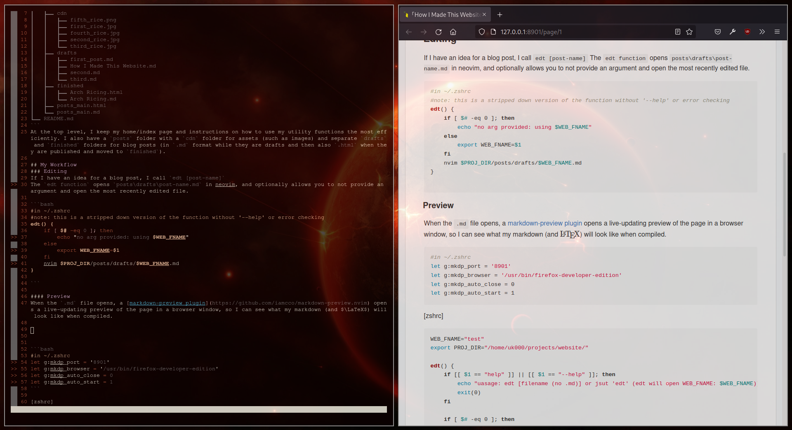

├── index.html
├── index.md
├── posts
│ ├── cdn
│ │ ├── fifth_rice.png
│ │ ├── first_rice.jpg
│ │ ├── fourth_rice.jpg
│ │ ├── second_rice.jpg
│ │ └── third_rice.jpg
│ ├── drafts
│ │ ├── first_post.md
│ │ ├── How I Made This Website.md
│ │ ├── second.md
│ │ └── third.md
│ ├── finished
│ │ ├── Arch Ricing.html
│ │ └── Arch Ricing.md
│ ├── posts_main.html
│ └── posts_main.md
└── README.md At the top level, I keep my home/index page and instructions on how to use my utility functions the most efficiently. I also have a posts folder with a cdn folder for assets (such as images) and separate drafts and finished folders for blog posts (in .md format while they are drafts and then also .html when they are published and moved to finished).
If I have an idea for a blog post, I call edt [post-name] The edt function opens posts\drafts\post-name.md in neovim, and optionally allows you to not provide an argument and open the most recently edited file.
#in ~/.zshrc
#note: this is a stripped down version of the function without '--help' or error checking
WEB_FNAME="test"
edt() {
if [ $# -eq 0 ]; then
if [[ "$WEB_FNAME" == "test" ]]; then
cd $PROJ_DIR/posts/drafts/
return 1
fi
else
export WEB_FNAME=$(echo $1 | cut -d. -f1)
echo "using $WEB_FNAME"
fi
nvim $PROJ_DIR/posts/drafts/$WEB_FNAME.md
}When the .md file opens, a markdown-preview plugin opens a live-updating preview of the page in a browser window, so I can see what my markdown (and \(\LaTeX\)) will look like when compiled.

#in ~/.zshrc
let g:mkdp_port = '8901'
let g:mkdp_browser = '/usr/bin/firefox-developer-edition'
let g:mkdp_auto_close = 0
let g:mkdp_auto_start = 1I can then write my post, coming back to it with edt as necessary, until I feel it is complete.
As previously mentioned, I write these posts as Markdown (.md) files, and in order for a browser to display them, they must be HTML. I facilitate the conversion between those formats using pandoc. I simplify my use of pandoc with a zsh function because shortening long commands makes life easier.
#in ~/.zshrc
pan() {
if [ $# -eq 0 ]; then
echo "using $WEB_FNAME"
sleep 3
1=$WEB_FNAME
fi
#envsubst < $PROJ_DIR/posts/drafts/$1.md
pandoc --standalone --from markdown --to html5 --mathjax $PROJ_DIR/posts/drafts/$1.md -o $PROJ_DIR/posts/finished/$1.html
firefox-developer-edition $PROJ_DIR/posts/finished/$WEB_FNAME.html
}The final step in the blogging process involves relabelling my post as a finished product (up until now it was a draft) and making it accessible from a main_posts page in the index (“home page”) of my website. This is done through another zsh function: pub.
#in ~/.zshrc
pub() {
if [ $# -eq 0 ]; then
echo "no arg provided: using $WEB_FNAME"
else
WEB_FNAME=$1
fi
my_date=$(stat -c %y $PROJ_DIR/posts/finished/$WEB_FNAME.html | awk -F. '{print $WEB_FNAME}') &&
#probably could be cleaned up but it works
echo "\\> [$WEB_FNAME](finished/$WEB_FNAME.html) || $my_date" >> $PROJ_DIR/posts_main.md &&
my_post="<p>\> <a href=\"finished/$WEB_FNAME.html\">$WEB_FNAME</a> \|\| $my_date</p>"
sed -zEi "s|(\n[^\n]*){3}$|\n$my_post&|" $PROJ_DIR/posts_main.html
mv $PROJ_DIR/posts/drafts/$WEB_FNAME.md $PROJ_DIR/posts/finished/$WEB_FNAME.md
fi
}# Posts:
<!--- The following entries are autogenerated--->
<!--- [post-name](relative-post-location) || last-modified-date-of-post-in-"yyyy-mm-dd hh-mm-ss"--->
\> [Example Post](posts/finished/Example\ Post.html) || 2021-01-01 13:37:37After making changes, I run
git commit -a -m "wrote blog post about something idk"
git pushI may further automate this part but for now (as of 2021-10-31) I do this sequence of commands manually and with no aliases.
# create github pages repo (named username.github.io) using github's web interface
cd $PROJ_DIR
git init
git add .
git commit -m "added files"
git remote add origin git@github.com:belkarx/belkarx.github.io.git
git remote -v
git pull origin main --allow-unrelated-histories
git push --set-upstream origin main
git status